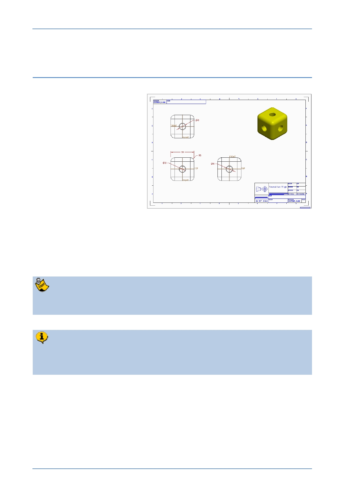

PTC Academic Program
Module 5
Procedure - Engineering drawing
Scenario
The final section of this
introductory tutorial teaches you
how to create an engineering
drawing from a Creo Parametric
model.
This process is largely automated
and, because models and
drawings are “associative”,
changes to the model are
immediately reflected in the
drawing.
Configuring Creo
PTC provides a number of bat files to easily configure Creo Parametric so that it
defaults to the units and drawings standards in your region. The bat files together with
instructions how to use them are located here:
C:\Program Files\PTC\Creo 2.0\Common Files\F000\creo_standards
F000 indicates the software build code and your installation may have an M
prefix.
The drawing section of this tutorial uses the configure_for_ ISO_mmks.bat file
setting millimeters, kilograms and seconds as the units and ISO drawing
standards.
© 2012 PTC
Creo Parametric 2.0 Primer
Page 89